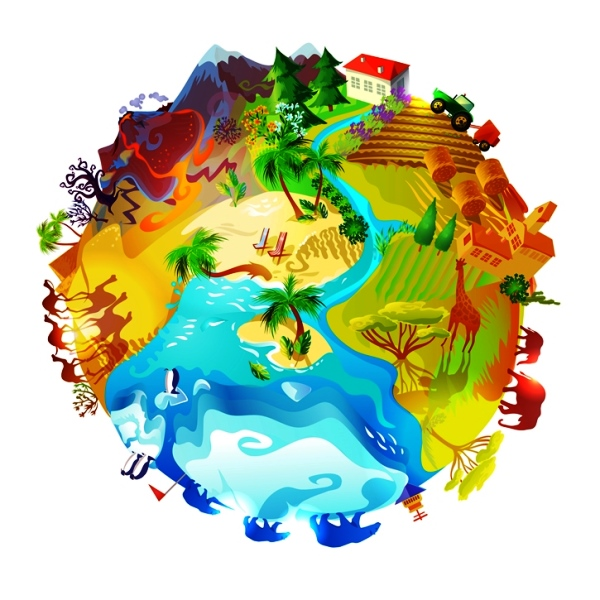

Unidad 5. SIG.

En esta unidad estudiaremos los conceptos que tienen que ver con el “Suelo” como cuerpo natural, tridimensional, como un sistema de tres fases, cuyos atributos son productos de la acción conjunta de los factores y procesos formadores de suelo. De igual manera, se tratarán las propiedades morfológicas, físicas, químicas y biológicas de los suelos con especial énfasis en aquellas requeridas para la clasificación taxonómica. Se incluye además diversa información relacionada con los temas tratados: clases teóricas, manuales y material bibliográfico recomendado para su lectura.
Historia de los SIG, definiciones y ejemplo de aplicación
Clase 1 : En esta clase cubriremos aspectos como la presentara del tema SIG, una breve historia y evolucion de los SIG, definiciones y conceptos y algunos ejemplos de su aplicacion en estudios agroambientales.
Modelos de representación, elementos geograficos y Sistemas de coordenadas
Clase 2 : En esta clase cubriremos aspectos como Modelos de representación vectorial y raster, los diefrentes tipos de elementos geograficos (Puntos, líneas, polígonos) y fundamentos de los Sistemas de coordenadas y proyección cartográfica pertinente a El Salvador.
Tablas SIG
Clase 3 : En esta clase cubriremos aspectos relacionados a las bases de datos atributivas de las capas SIG, un recoorido por sus diferentes herramientas y los procedimientos comunes.
Analisis espacial SIG
Clase 4 : En esta clase cubriremos aspectos basicos de los principales procediemtos de analisis espacial empleados para producir las unidades cartograficas de suelos preliminares y el diseño del muestreo de los suelos ha seguir en campo.
Salidas graficas - Mapas SIG